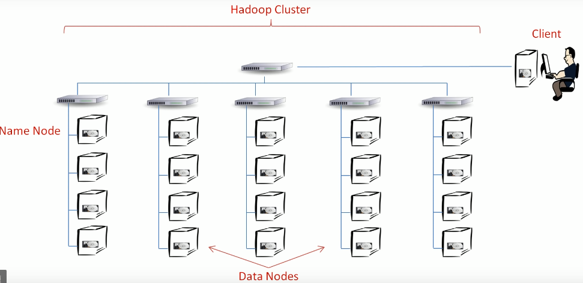
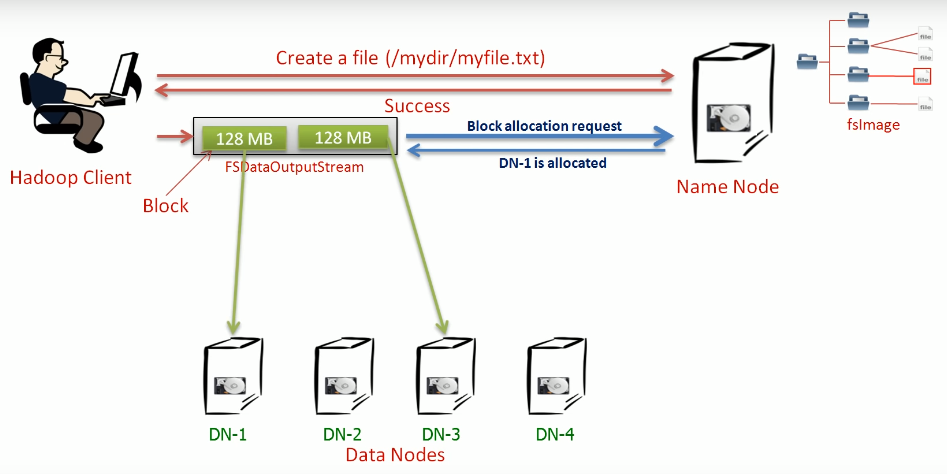

Hadoop Cluster Architecture¶

Hadoop Cluster Rack¶
- One column of computers is called one Rack.
- The Rack is nothing but a kind of a Box. We fix multiple computers into a Rack.
- Each Rack is given a power supply and a dedicated network switch.
So, that is how a typical Hadoop cluster is networked. We have multiple racks, each with their switch. Finally, we connect all these switches to a core switch. So, everything is on a network, and we call it the Hadoop cluster.
Hadoop Master Node¶
- The HDFS is designed using master-slave architecture.
- The Hadoop master is called the
Name Node, and slaves are calledData Nodes.
How Hadoop Stores a file?¶
There are three actors there. - Hadoop Client. - Hadoop Name Node. - Hadoop Data Nodes.

- The Hadoop client will send a request to Name Node that it wants to create a file. The client will also supply the target directory name and the filename. On receiving a request, the Name Node will perform various checks like directory already exists, the file doesn’t already exist, and the client has the right permissions to create a file. Name Node can perform these checks because it maintains an image of entire HDFS namespace into memory (In memory fsImage). If all the tests pass, the Name Node will create an entry for the new file and return success to the client. The file name creation is over, but it is empty, you haven’t started writing data to the file yet. Now it’s time to start writing data.
- So, the Client will create an FSDataOutputStream and start writing data to this stream. The FSDataOutputStream is the Hadoop streamer class, and it internally does a lot of work. It buffers the data locally until you accumulate a reasonable amount of data, let’s say 128 MB. We call it a block. An HDFS data block. Right?
- So, once there is one block of data, the streamer reaches out to Name Node asking for a block allocation. It is just like asking the Name node that where do I store this block? The name node doesn't store data. But the name node knows the amount of free disk space at each data node. In fact, it knows the status of all the resources at each data node. With that information, The Name node can easily assign a data node to store that block. So,the Name Node will perform this allocation and send back the data node name to the streamer.
- Now the Streamer knows that where to send the data block. That’s it. The Streamer starts sending the block to the data node. If the file is larger than one block, the Streamer will again reach out to Name node for a new block allocation. This time, the Name node may assign some other data node. So, your next block goes to the different data node. Once you finish writing to the file, the name node will commit all the changes.
Hadoop Architecture Summary¶
- HDFS是主从架构。
- 一个HDFS集群包括一个名称节点和若干个数据节点。
- 名称节点管理文件系统名称空间并管理客户端对文件的访问。
- 数据节点以块的形式存储文件。
- 每个数据节点定期向名称节点发送心跳以通知它是否存活。Heartbeat还包括资源容量信息，可帮助命名节点执行各种决策。数据节点还向名称节点发送块报告。块报告是数据节点维护的所有块的运行状况信息。
- HDFS将文件拆分为一个或多个块，并将这些块存储在不同的数据节点上。名称节点维护块到文件的映射，块的顺序和其他元数据。
- HDFS使用的典型块大小为128 MB。
- 名称节点确定块到数据节点的映射。但是在映射之后，客户端直接与数据节点交互以进行读写。
- 当客户端将数据写入HDFS文件时，数据首先进入本地缓冲区。该方法适用于向HDFS提供流读/写功能。
- 名称节点和数据节点是软件。因此，在最低配置下，您可以在同一台计算机上运行并创建单节点Hadoop集群。但是，典型的部署具有仅运行名称节点软件的一台专用计算机 ，集群中的每台其他计算机都运行一个数据节点软件实例。